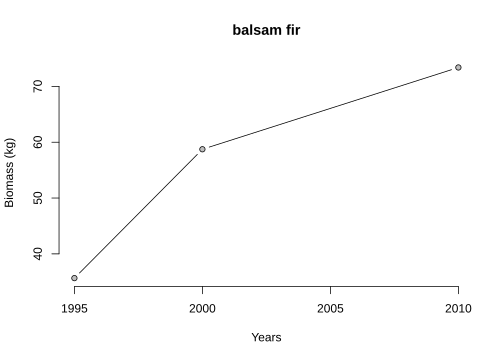

Chapter 5 Functions and programming
TBD: most of this will stay, but just needs some revision. Also, this is the first time BA has been mentioned, so we’ll move the derivation of the “forester’s” constant 0.005454 up from where it’s introduced later.
In the previous chapter, we introduced data structures that serve as the fundamental building blocks for data analysis in R. As we have seen with examples like mean() and length(), functions are used to perform tasks with data structures and other R objects. Gaining a better understanding of existing functions and the ability to write our own functions dramatically increases what you can do with R. Learning about R’s programming capabilities is an important step in gaining facility with functions. Further, functional programming basics described in this chapter are found in nearly all programming and scripting languages.
In this chapter, we will introduce some key elements of programming. First we will describe how to write your own functions in R. We will next introduce conditional statements, which are an always useful tool for applying different code depending on characteristics of the data or objects we are working with. We will briefly touch on for loops and while loops. In R, loops are arguably less important than in other languages as a result of functions that can efficiently perform these same sorts of iterative operations in less (and more readable) code.31 However, we feel a basic understanding of loops is essential for learning any programming language, especially given the flexibility of R to interface with other programming languages (e.g., C++) and statistical software (e.g., JAGS) that require an understanding of loops. Lastly, we will describe how to use your own functions in combination with apply() for efficient calculations.
5.1 R functions
A function has four key ingredients:
- Name: must adhere to R’s naming requirements (Section 3.2.2).
- Arguments: the function takes objects as inputs (optional).
- Body: performs some task.
- Return: functions often return an object (optional).
As with most things, we find learning how to write functions is best grasped through examples. Let’s start with some pseudocode for a function.32
name.of.function <- function(argument.1, argument.2) {
do something
return(something)
}While the words inside the pseudocode directly correspond with their purpose in the function, let’s make each component part in the pseudocode explicitly clear in how it matches to the four key ingredients of a function:
- Name: here we assign the function definition to
name.of.function. - Arguments: The syntax
function(argument.1, argument.2)says we are creating a function with two arguments, with namesargument.1andargument.2. - Body: what the function will do is defined between the curly brackets. We wrote
do somethingto indicate this is where the body of the function is written. - Return: before we close the function definition we return something we’ve created. This step is optional, but most functions we write do return something.
The argument can be any type of object (like a single value, a matrix, a data frame, a vector, a logical, etc.). Here are a few simple examples of functions.
my_first_function <- function(){
print("Ever stop to think, and forget to start again?")
}
my_first_function()#> [1] "Ever stop to think, and forget to start again?"Let’s consider the four ingredients for our new function:
- Name:
my.first.function. - Arguments: this function has no arguments, which is clear since there is nothing defined between the parentheses in
function(). - Body: the body tells R to print a fun quote by Alan A. Milne.
- Return: no values or objects are formally returned by this function.
Now let’s define a function that takes two arguments, the first value is raised by the second, and the result is returned.
#> [1] 32#> [1] 1#> [1] 1#> Error in x^v: non-numeric argument to binary operatorNot surprisingly the last test of this function throws an error. Perhaps we should modify the function to first test if both x and v are numeric. There are lots of ways to perform this check, but for now consider this particularly convenient function called stopifnot(). If any logical tests in stopifnot() are FALSE then an error message is returned and the function evaluation is stopped. So let’s revise the pow function by adding a test that ensures both arguments are numeric.
pow <- function(x, v) {
stopifnot(is.numeric(x), is.numeric(v))
result <- x^v
return(result)
}
pow(2, 5)#> [1] 32#> Error in pow("a", "b"): is.numeric(x) is not TRUEWe now see a more clear error message that tells us the condition we required for the argument x (i.e., is.numeric(x)) is not true. This concept of checking the function inputs (i.e., arguments) to ensure they meet some criterion is a programming concept called exception handling.
Let’s motivate learning some more function features using data on tree measurements from a single plot in the Penobscot Experimental Forest (PEF). Below we read in a subset of the PEF data set comprised of tree measurements taken on plot 11 within management unit 10.
#> 'data.frame': 253 obs. of 6 variables:
#> $ year : int 1995 1995 1995 1995 1995 1995 1995 1995 1995 1995 ...
#> $ PEF_species_code: int 1 1 1 1 1 1 1 1 1 1 ...
#> $ DBH_in : num 1.5 4.5 3.6 4.4 5.3 ...
#> $ common_name : chr "balsam fir" "balsam fir" "balsam fir" "balsam fir" ...
#> $ scientific_name : chr "Abies balsamea" "Abies balsamea" "Abies balsamea" "Abies balsamea" ...
#> $ USFS_FIA_code : int 12 12 12 12 12 12 12 12 12 12 ...We will work toward developing a function that returns above-ground biomass given a tree’s DBH and species, which is a form of allometric equation. Let’s start simple with a function that returns basal area given DBH. The formula for computing basal area in square feet when DBH is measured in inches is
\[ BA = \pi \cdot \frac{DBH^2}{(4 \cdot 144)} \approx 0.005454DBH^2. \]
We can convert this mathematical notation to an R function as follows
We name our function ba(). The function takes DBH as an argument (labeled dbh) and returns basal area in square feet (return(ba_sq_ft)). The formula in the ba() function assumes DBH is given in inches. Let’s test the function a couple of times
#> [1] 0.012272#> [1] 0.0122718 0.1104466 0.0706858 0.1055924 0.1532072
#> [6] 0.1418625 0.6720063 0.0044179 0.0288525 0.0668134Now that we have our basic function working, let’s make the function more realistic. Instead of estimating basal area, suppose we are more interested in estimating total aboveground biomass, which is often of interest to inform forest carbon monitoring programs, renewable energy sources, etc. We know the relationship between biomass and DBH depends on the species of the tree. Let’s extend our function using the species-specific allometric equations published by Jenkins et al. (2003), which take the following form
\[\begin{equation} AGB = \exp(\beta_0 + \beta_1 \ln(DBH)), \tag{5.1} \end{equation}\]
where
- \(AGB\) is total aboveground biomass (kg dry weight) for trees 2.5 cm DBH and larger
- \(DBH\) is diameter at breast height in cm
- \(\exp\) is the exponential function
- \(\ln\) is the natural logarithm, i.e., inverse function of the exponential function
For now, we need to determine what species we have in our data set to formulate our function. The table function is useful for this task.
#>
#> Ostrya virginiana Fagus grandifolia
#> 1 2
#> Picea rubens or P. mariana Betula papyrifera
#> 3 5
#> Thuja occidentalis Tsuga canadensis
#> 11 12
#> Fraxinus americana Betula alleghaniensis
#> 17 28
#> Acer rubrum Abies balsamea
#> 63 108We see there are 11 total species, with most individual trees being Acer rubrum or Abies balsamea.
Table 4 in Jenkins et al. (2003) provides species specific values for the regression coefficients \(\beta_0\) and \(\beta_1\). Table 5.1 below provides the regression coefficients for the species in our subset of PEF data.
| Species | \(\beta_0\) | \(\beta_1\) |
|---|---|---|
| American beech | -2.0127 | 2.4342 |
| balsam fir | -2.5384 | 2.4814 |
| eastern hemlock | -2.5384 | 2.4814 |
| hophornbeam / ironwood | NA | NA |
| northern white-cedar | -2.0336 | 2.2592 |
| other hard hardwoods | NA | NA |
| paper birch | -1.9123 | 2.3651 |
| red maple | -1.9123 | 2.3651 |
| red or black spruce | -2.0773 | 2.3323 |
| white ash | -2.48 | 2.4835 |
| yellow birch | -1.923 | 2.3651 |
Here are some things we’ll need to accommodate in our function:
- Jenkins’ allometric equations are parameterized for cm DBH, so the PEF’s DBH will need to be converted from inches to cm.
- There is a different set of regression coefficients for many of the species, so we’ll need to pass in species and have the function apply the correct set of regression coefficients.
- There are a couple species with missing data points, so we’ll want to make sure the function properly handles those cases.
No problem addressing the first point in the list above, we can easily convert inches to cm. However, the second and third points will require some conditional statement tests. We’ll tackle this in the next section.
5.2 Programming: conditional statements
We often want to apply different code conditional on characteristics of the data or objects at hand. This can be accomplished using an if statement. The argument of the if statement is a single logical value, i.e., TRUE or FALSE. If TRUE, the code within the if statement is evaluated. If FALSE, the if statement is skipped. Consider this simple example.
my_if_example <- function(x){
if (x) {
print("x is TRUE")
}
if (!x) {
print("x is FALSE")
}
}
my_if_example(TRUE)#> [1] "x is TRUE"#> [1] "x is FALSE"Using if statements almost always involves the use of comparison and logical operators (see Section 4.7). Often we want to evaluate one expression if some logical condition is true, and evaluate a different expression if the condition is false. That is accomplished using the else if statement. Here we determine whether a number is positive, negative, or zero.
sign <- function(x) {
if (x < 0) {
print("the number is negative")
} else if (x > 0) {
print("the number is positive")
} else {
print("the number is zero")
}
}
sign(3)#> [1] "the number is positive"#> [1] "the number is negative"#> [1] "the number is zero"Notice the sequence of conditional tests starts with if. If this is not TRUE, R moves to the else if statement. If this is not TRUE, the sequence is terminated in an else. That final else acts as a catchall when all conditional tests above it are FALSE. Above, we have only one else if test, but you can have as many as you need, e.g., see the example below.
Let’s return to our PEF example and develop a function that applies the regression equation (5.1) using species specific regression coefficients given in Table 5.1.
agb <- function(dbh_in, species) {
dbh_cm <- dbh_in * 2.54
if (dbh_cm < 2.5) {
beta_0 <- NA
beta_1 <- NA
} else if (species == "American beech") {
beta_0 <- -2.0127
beta_1 <- 2.4342
} else if (species %in% c("balsam fir", "eastern hemlock")) {
beta_0 <- -2.5384
beta_1 <- 2.4814
} else if (species == "red or black spruce") {
beta_0 <- -2.0773
beta_1 <- 2.3323
} else if (species == "northern white-cedar") {
beta_0 <- -2.0336
beta_1 <- 2.2592
} else if (species %in% c('paper birch', 'red maple', 'yellow birch')) {
beta_0 <- -1.9123
beta_1 <- 2.3651
} else if (species == 'white ash') {
beta_0 <- -2.48
beta_1 <- 2.4835
} else {
beta_0 <- NA
beta_1 <- NA
}
bm <- exp(beta_0 + beta_1 * log(dbh_cm))
return(bm)
}
agb(5, "balsam fir")#> [1] 43.308#> [1] 6.9014#> [1] NAConsider our new function agb() above that takes DBH (in) and species common name as arguments, dbh_in and species, respectively, and returns aboveground biomass (kg). The first line in the function’s body converts DBH in inches to cm, because that’s what the Jenkins et al. (2003) biomass equation expects. The if statement that follows checks if DBH is at least 2.5 cm. If DBH is less than 2.5 cm then we set the coefficients to NA, as these functions are only valid for trees with DBH gerater than or equal to 2.5 cm. Next we go into a series of else if statements that identify the species specific values for the regression coefficients beta_0 and beta_1. If the species argument is not one of the species for which we have regression coefficients then the last else is reached where we set the regression coefficients to NA, indicating we do not have the coefficients for those species. The second to last line in agb’s body is the regression equation defined in Equation (5.1), now with the species specific regression coefficients beta_0 and beta_1. Finally, return(bm) returns the resulting biomass (kg). We will continue working with this function later in the chapter to show multiple ways to apply the function across all the trees in the pef_p11 data set. In Section 7.14.3, we will see an alternative, and more reproducible approach to implementing species-specific allometric equations using joins.
5.3 More on functions
Understanding functions deeply requires a careful study of the scoping rules of R, as well as a good understanding of environments in R. That’s beyond the scope of this book, but we will briefly discuss some issues that are most salient. For a more in-depth treatment, see Advanced R by Hadley Wickham (Wickham 2019), especially the chapters on functions and environments.
5.3.1 Functions with multiple returns
We often want a function to return multiple objects. This is most easily done by making the return object be a list with elements corresponding to the different objects we want returned. Recall from Section 4.6 that lists can hold any combination of R objects. Here’s a simple example. Let’s make a function called quick_summary that returns the mean, median, and variance of a numeric vector. We can try it out using the DBH vector from pef_p11.
quick_summary <- function(x){
a <- mean(x)
b <- median(x)
c <- var(x)
result <- list("mean" = a, "median" = b, "var" = c)
return(result)
}
quick_summary(pef_p11$DBH_in)#> $mean
#> [1] 4.1213
#>
#> $median
#> [1] 3.6
#>
#> $var
#> [1] 13.3715.3.2 Creating functions
Creating very short functions at the command prompt is a reasonable strategy. For longer functions, one option is to write the function in a script window and then submit the whole function. Or a function can be written in any text editor, saved as a plain text file (possibly with a .R extension), and then read into R using source().
5.3.3 Calling functions
When using a function, the function arguments can be specified in three ways:
- By the full name of the argument.
- By the position of the argument.
- By a partial name of the argument.
tmp_function <- function(first_arg, second_arg, third_arg, fourth_arg) {
return(c(first_arg, second_arg, third_arg, fourth_arg))
}
tmp_function(34, 15, third_arg = 11, fou = 99)#> [1] 34 15 11 99Positional matching of arguments is convenient, but should be used carefully, and probably limited to the first few and most commonly used arguments in a function. Partial matching also has some pitfalls
tmp_function <- function(first_arg, fourth_arg){
return(c(first_arg, fourth_arg))
}
tmp_function(1, f = 2)#> Error in tmp_function(1, f = 2): argument 2 matches multiple formal argumentsA partially specified argument must unambiguously match exactly one argument.
5.4 Loops
Loops are an important component of any programming language. They play a less important role in R as a result of vectorized functions like apply() (Section 5.5). In fact, we went back and forth on whether or not we wanted to include a section on loops in this book. However, there are at least three reasons why an introductory section on loops is important for learning R:
- There are certain situations where loops may be used to make code more efficient and reproducible, rather than a series of copying and pasting.
- R has a lot of flexibility in interfacing with other programming languages (e.g.,
C++) and statistical software (e.g.,JAGS) that require an understanding of loops. - We find an understanding of loops can help improve the sort of “logical thinking” that makes writing code easier.
Below we briefly introduce the two most common forms of loops, while loops and for loops.
5.4.1 A while loop
Suppose we want to print the first 10 DBH values in the pef_p11 data set. We could do that easily using head():
#> [1] 1.5 4.5 3.6 4.4 5.3 5.1 11.1 0.9 2.3 3.5Alternatively, we could use this idea to motivate using a while loop. A while loop has the form
while (condition) {
expression
}As long as the condition is TRUE, the expression is evaluated. Once the condition is FALSE, the loop stops. Let’s use this concept to print the first 10 DBH values in pef_p11.
#> [1] 1.5
#> [1] 4.5
#> [1] 3.6
#> [1] 4.4
#> [1] 5.3
#> [1] 5.1
#> [1] 11.1
#> [1] 0.9
#> [1] 2.3
#> [1] 3.5Let’s break down each component of the while loop:
- We first set
i <- 1. This will serve as our indexing variable that will keep track of which element we are on. - Our condition inside the
whileloop isi <= 10, which means we will perform the expression inside the loop untiliis equal to or greater than 10. - Inside the loop is our expression
print(pef_p11$DBH_in[i]), telling R to print the ith DBH value. - Also included inside the loop is
i <- i + 1, which serves to increaseieach time we print a value in the loop.
5.4.2 A for loop
A for loop has the form:
for (variable in vector) {
expression
}The for loop sets the variable equal to each element of the vector in succession, and evaluates the expression each time. As an alternative to the head function and the while loop we used above, we can print the first 10 DBH values in pef_p11 using a for loop:
#> [1] 1.5
#> [1] 4.5
#> [1] 3.6
#> [1] 4.4
#> [1] 5.3
#> [1] 5.1
#> [1] 11.1
#> [1] 0.9
#> [1] 2.3
#> [1] 3.5We see that our variable i is set to start at 1 and iterate by one through the values to 10 (1:10). Inside the loop is the same expression we saw in the while loop to print the ith DBH value.
Now let’s return to our example of computing the AGB for each tree in the pef_p11 data set. We could do this one by one for each tree in the dataset:
#> [1] 2.1832#> [1] 33.344Doing this for the 253 trees in pef_p11 would be highly inefficient. We can make this a bit easier by using a for loop.
pef_p11$AGB <- NA
for (i in 1:nrow(pef_p11)) {
pef_p11$AGB[i] <- agb(pef_p11$DBH_in[i], pef_p11$common_name[i])
}
head(pef_p11$AGB, 10)#> [1] 2.1832 33.3444 19.1668 31.5359 50.0449
#> [6] 45.4889 313.3327 NA 6.3057 17.8728While this was much more efficient than individually running the function for each tree in the data set, using a for loop to accomplish this task in R is not the most efficient way. Instead, we can use apply() family of functions.
5.5 The apply() function
In the previous section we used a for loop to create a new column (AGB) to our pef_p11 data frame. for loops are sometimes difficult to understand and lead to potentially more errors that go unnoticed. In many situations, we can replace for loops and produce more reproducible code by using apply(), which along with a series of other functions based on apply(), is a common function in a forester’s R data science toolkit. This function applies a user-defined function to a data frame’s rows, columns, or both rows and columns.33 The arguments are:
Xthe data frame of interest.MARGINthe rows (MARGIN = 1), columns (MARGIN = 2), or rows and columns (MARGIN = c(1,2)) the function (FUN) should be applied to.FUNthe function to be applied.
For example, consider the FEF data set (Section 1.2.1), which is imported into R in the following code chunk
#> 'data.frame': 88 obs. of 18 variables:
#> $ watershed : int 3 3 3 3 3 3 3 3 3 3 ...
#> $ year : int 1991 1991 1991 1991 1991 1992 1992 1992 1992 1992 ...
#> $ plot : int 29 33 35 39 44 26 26 26 48 48 ...
#> $ species : chr "Acer rubrum" "Acer rubrum" "Acer rubrum" "Acer rubrum" ...
#> $ dbh_in : num 6 6.9 6.4 6.5 7.2 3.1 2 4.1 2.4 2.7 ...
#> $ height_ft : num 48 48 48 49 51 40 30.5 50 28 40.4 ...
#> $ stem_green_kg : num 92.2 102.3 124.4 91.7 186.2 ...
#> $ top_green_kg : num 13.1 23.1 8.7 39 8.9 0.9 0.9 8.6 0.7 5 ...
#> $ smbranch_green_kg: num 30.5 23.5 22.3 22.5 25.4 1.9 2.2 8 3.7 3.8 ...
#> $ lgbranch_green_kg: num 48.4 57.7 44.1 35.5 65.1 1.5 0.6 4 0.5 1.8 ...
#> $ allwoody_green_kg: num 184 207 200 189 286 ...
#> $ leaves_green_kg : num 16.1 12.9 16.5 12 22.4 0.9 1 6.1 2.5 1.6 ...
#> $ stem_dry_kg : num 54.7 62.3 73.3 53.6 106.4 ...
#> $ top_dry_kg : num 7.1 12.4 4.6 21.3 4.7 0.5 0.5 4.4 0.4 2.7 ...
#> $ smbranch_dry_kg : num 15.3 14.8 11.5 11.2 11.7 1.1 1.2 3.6 1.8 0.8 ...
#> $ lgbranch_dry_kg : num 28 33.6 25.1 19.8 36.1 0.9 0.3 2.1 0.3 1 ...
#> $ allwoody_dry_kg : num 105 123 114 106 159 ...
#> $ leaves_dry_kg : num 6.1 4.6 6.1 4.2 7.9 0.3 0.3 1.9 0.8 0.5 ...This data sets contains numerous measurements on tree characteristics useful for developing allometric equations. Suppose we want to compute the standard deviation of each measured variable (stored in columns 5 through 18). We can do this with one line of code using apply():
#> dbh_in height_ft stem_green_kg
#> 2.0580 10.6533 66.2194
#> top_green_kg smbranch_green_kg lgbranch_green_kg
#> 10.5948 11.8596 27.5178
#> allwoody_green_kg leaves_green_kg stem_dry_kg
#> 109.0185 7.7560 36.5512
#> top_dry_kg smbranch_dry_kg lgbranch_dry_kg
#> 5.6739 6.1836 15.4168
#> allwoody_dry_kg leaves_dry_kg
#> 60.1813 2.8747Following our discussion in Section 5.3.3, as long as argument values are given in the correct order, the corresponding argument names don’t need to be included. After consulting the apply() manual page you’ll see X, MARGIN and FUN are the first three arguments, so the code apply(fef_trees[, 5:18], 2, sd) is equivalent to the code above. While this could also be accomplished using a for loop, the apply() function provides a more concise and faster way of accomplishing the same task.
5.5.1 Using user-defined functions with apply()
We just learned how to use apply() with built-in R functions like sd() and mean(). We can greatly expand the power of apply() by using our own user-defined functions within apply(). Now that we know how to write our own R functions, this becomes a trivial task.
Suppose we want to calculate the total number of non-missing values for all columns in the pef_p11 data frame. Let’s first write a function that will calculate the total number of non-missing values in a vector of values:
#> [1] 4Notice that we do not explicitly use return() in our function, but the function returns the values from sum(!is.na(values)). In R, if a function does not have an explicit return statement, the function will return the last value in the body of the function, which in our case is sum(!is.na(values)). Now we can directly supply our newly created function to apply() for use with the pef_p11 data frame:
#> year PEF_species_code DBH_in
#> 253 253 253
#> common_name scientific_name USFS_FIA_code
#> 253 250 253
#> AGB
#> 211Combining user-defined functions with the apply() function is an efficient R coding technique that we use nearly every day.
5.5.2 Relatives of apply()
apply() is the basic function for an entire family of related functions that similarly perform repeated observations to R objects. Such extensions of apply() include lapply(), sapply(), tapply(), and mapply(). Each of these functions are used to perform a series of tasks simultaneously across different types of R objects. Functions like lapply() and sapply() are particularly useful when working with lists (Section 4.6).
For example, recall we used a for loop in Section 5.4.2 to compute the aboveground biomass for all trees in the pef_p11 data set. This was certainly more efficient and reproducible compared to explicitly calculating the value for each tree with a separate line of code. We can make this even more efficient using mapply() together with our user-defined agb() function. mapply() works similarly to apply(), but now applies a function to each element of multiple vectors, where the multiple vectors are supplied as the arguments to the individual function. Below we calculate aboveground biomass for each species in pef_p11.
agb_pef_p11 <- mapply(FUN = agb, dbh_in = pef_p11$DBH_in, species = pef_p11$common_name)
head(agb_pef_p11)#> [1] 2.1832 33.3444 19.1668 31.5359 50.0449 45.4889The first line in the previous code chunk applies the function agb to the first elements of pef_p11$DBH_in and pef_p11$common_name, the second elements, the third elements, and so on. Notice we explicitly specified the two arguments in agb() (i.e., dbh_in and species) directly in the call to mapply() to tell the function the specific argument each vector corresponds to. Alternatively, we could have used mapply(FUN = agb, pef_p11$DBH_in, pef_p11$common_name), which would send pef_p11$DBH_in to the first argument of agb() (i.e., dbh_in) and pef_p11$common_name to the second argument of agb() (i.e., species).
We encourage you to explore the help pages for these functions if you find yourself often writing for loops to accomplish seemingly simple, but repetitive, tasks. Further, we will soon see that many tasks performed by for loops or the apply() family of functions can also be accomplished using intuitive functions from the dplyr (Wickham et al. 2023) package after transforming data sets into tidy format (Chapter 6).
5.6 Summary
In this chapter we introduced many essential programming techniques that will take your R coding and data analysis to the next steps. Much of our discussion focused around how to write your own functions. We applied this knowledge to make a function that computed species-specific aboveground biomass. We then briefly discussed the two most common types of loops, while loops and for loops, and how to use them in R. We emphasized that loops are less important in R as a result of vectorized functions like apply(), which we showed can be used in combination with user-defined functions to provide a useful way to summarize data sets and apply functions iteratively to vectors or other R objects.
While this chapter may be a bit technical, we feel an understanding of how to write your own functions and how to use essential programming techniques like conditional statements and loops can greatly improve the efficiency of working with and analyzing forestry and ecological data. While R has a vast suite of packages that consist of all sorts of functions, having the ability to address a problem that you can’t easily do using built-in R functions by using the programming techniques we have discussed can save you tremendous amounts of painful time that would have been spent searching the web for that specific R function you need (that may or may not exist). Further, as you progress in your education, job, or research, you will almost certainly encounter a situation where there is no R function to accomplish the task. The concepts we covered in this chapter provide you with the necessary tools to tackle those problems head on.
5.7 Exercises
Exercise 5.1 Write a function called FtoC() that takes as an argument a temperature on the Fahrenheit scale and returns the corresponding temperature in degrees Celsius. The formula for converting temperatures from Fahrenheit (F) to Celsius (C) is \(C = \frac{5}{9} \times (F - 32)\). What is the Celsius temperature for 20 degrees Fahrenheit?
Exercise 5.2 In the FtoC() function created in Exercise 5.1, add two checks of the function argument tempF using the stopifnot() function: (a) check if tempF is numeric, and (b) check if tempF is greater than or equal to -100 and less than or equal to 200.
Exercise 5.3 Consider the pef_p11 data set we have worked with throughout the chapter.
#> 'data.frame': 253 obs. of 7 variables:
#> $ year : int 1995 1995 1995 1995 1995 1995 1995 1995 1995 1995 ...
#> $ PEF_species_code: int 1 1 1 1 1 1 1 1 1 1 ...
#> $ DBH_in : num 1.5 4.5 3.6 4.4 5.3 ...
#> $ common_name : chr "balsam fir" "balsam fir" "balsam fir" "balsam fir" ...
#> $ scientific_name : chr "Abies balsamea" "Abies balsamea" "Abies balsamea" "Abies balsamea" ...
#> $ USFS_FIA_code : int 12 12 12 12 12 12 12 12 12 12 ...
#> $ AGB : num 2.18 33.34 19.17 31.54 50.04 ...- Add a column called
agb_kgtopef_p11that contains the AGB for each tree measurement. Usemapply()as we saw in Section 5.5.2. - Use logical subsetting to create a data set called
pef_balsam_firthat only contains the measurements for balsam fir. tapply()is used to apply a function to a group of values or data rows, where the groups are determined by a categorical variable. Consider the following toy example using data from Table 4.2 where we calculate the average age for all trees within each of three stands.
stand <- c(1, 1, 2, 2, 3, 3)
age <- c(20, 50, 15, 11, 17, 37)
tapply(X = age, INDEX = stand, FUN = mean)#> 1 2 3
#> 35 13 27Use tapply() to calculate the average biomass for all balsam fir trees within each year using the newly created pef_balsam_fir data frame. Save the result in an object called balsam_fir_avg.
- Create a simple plot using
balsam_fir_avgthat shows the average balsam fir biomass in each year in the data set. Incorporate the following features into the plot: label the x-axis ‘Years’ and y-axis ‘Biomass (kg)’; name the title ‘balsam fir’ using themainargument; set the point shape to 21 (seepchargument); plot both lines and points using thetypeargument; fill the points with ‘grey’ color using thebgargument; and remove the frame from the plot using theframeargument. Your resulting plot should look like the following:

Exercise 5.4 Write a function to recreate the plot shown in Exercise 5.3 for any species in the pef_p11 data set. Call the function get_biomass_plot() and specify two arguments: pef_dat (the data frame holding the PEF data) and species (the common name of the species). Use the function to plot average biomass over time for white ash and yellow birch.
Exercise 5.5 While useful, there are many instances where using logical subsetting and R’s vectorization capabilities are more efficient and elegant ways to accomplish a task compared to using if statements and/or for loops. we can use logical subsetting and R’s vectorization capabilities instead of if statements and for loops. Determine how you can use logial subsetting to accomplish the same task as the following code chunk.
Exercise 5.6 We will often write functions to translate a mathematical formula into code. Consider the following equation, which is the quantile function of the Pareto distribution (the details of which are not important for the exercise).
\[
x_0(1 - p)^{-\frac{1}{\alpha - 1}}
\]
where \(x_0 > 0\), \(\alpha > 1\), and \(0 \leq p \leq 1\). Write a function qpareto() that has three arguments x0, alpha, and p and calculates the above expression given the values of the three arguments. Use stopifnot() to ensure the three arguments meet the above restraints. Test your function using the following three examples and make sure it gives the same results as ours.
#> [1] 1.3195#> Error in qpareto(p = 1.08, alpha = 2.5, x0 = 1e+06): p <= 1 is not TRUE#> [1] 5386087References
We will learn many such functions in the
tidyverseover the next few chapters.↩︎Pseudocode is notation resembling a simplified programming language, used in program design.↩︎
Note
apply()can also be used with higher-dimensional arrays, in which functions can be applied to any subset of the dimensions at once.↩︎